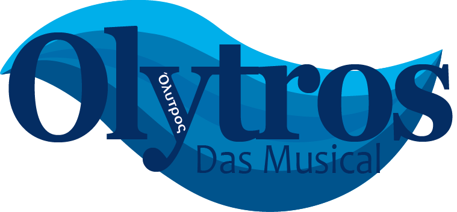
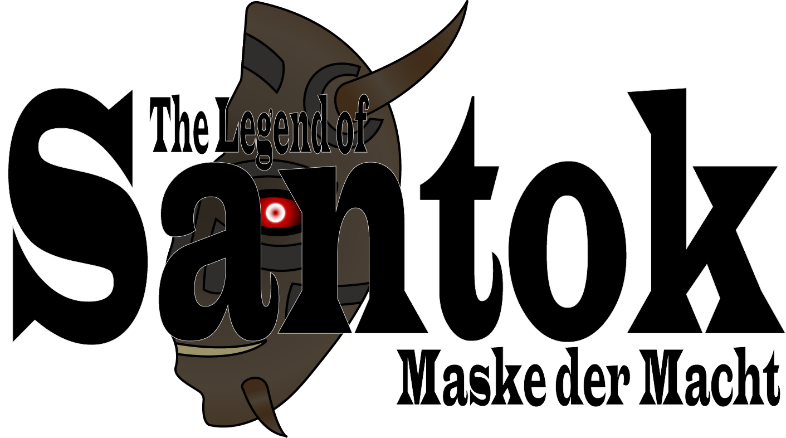

Startseite
Aktuelle Projekte
|  |
|
Olytros: Das MusicalOlytros: Das Musical handelt vom amerikanisch mexikanischen Leonardo Costas, der seinen verschollenen Vater finden möchte und dabei durch Stürme fährt in fremden Ländern strandet und sich auch selbst einschließt. Begleitet wird er auf seiner Reise von seinem Freund Dave und Jane einer Freundin aus der Kindheit. Leo's Vater hat ihm schon oft von Legenden rund um die antike griechische Stadt Olytros erzählt und ist auf der Suche nach ihr verschollen. |
| Mehr lesen... |
|  |
|
The Legend of Santok: Maske der MachtThe Legend of Santok: Maske der Macht handelt von Noro, einem 17 Jährigen aus Tokyo, der durch seltsame Art und Weise ins fantastische Königreich Santok verschleppt wird. Dort muss er trainieren um Tatsumi den dunklen Magier besiegen. |
| Mehr lesen... |
|
Epic: The Musical - German EditionEpic: The Musical handelt vom antiken griechischen Helden Odysseus und seinen Irrfahrten auf dem Heimweg nach dem Trojanischen Krieg. Epic besteht aus insgesamt aus 9 Alben, die im Fall von Epic Sagen genannt werden. Seit dem 25. Dezember 2024 sind die englischen Konzeptalben vollständig. Wie es mit der deutschen Synchronisation aussieht, steht noch aus. |
| Mehr lesen... |